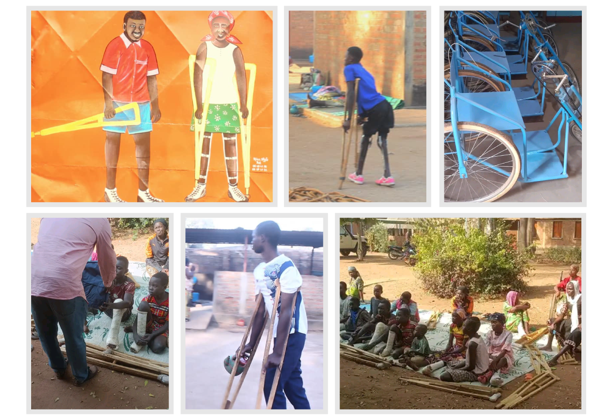

Redonner mobilité, dignité et autonomie aux personnes vivant avec un handicap physique.
Depuis 47 ans, l'AMNDP, Association Maison Notre-Dame de la Paix, soigne, appareille, forme et accompagne des milliers d'enfants et d'adultes tchadiens vers l'autonomie.

« M'ndigi Dja Tar » : Je veux marcher debout
Fondée le 1er mai 1979 par le Père Michel Guimbaud, missionnaire capucin, l'AMNDP est née du besoin urgent de prise en charge des enfants handicapés par la poliomyélite. Elle s'est imposée comme un centre de référence dans la rééducation, l'appareillage et la réinsertion sociale au Tchad.
Cette devise en dialecte Ngambaye, « Je veux marcher debout », résume tout le sens de notre mission depuis près de cinq décennies.
Lire notre histoire complète
Nos services
Kinésithérapie & rééducation
Rééducation fonctionnelle encadrée par des kinésithérapeutes qualifiés.
Appareillage orthopédique
Prothèses, orthèses, béquilles et voiturettes fabriquées sur mesure.
Missions chirurgicales
En partenariat avec Handicap Santé, des missions chirurgicales accueillies chaque année.
Réinsertion & formation
Réinsertion sociale et formation professionnelle pour une autonomie durable.
Chaque geste compte
Vos dons nous permettent d'assurer les soins, l'hébergement, l'alimentation et l'achat de matériaux pour les appareillages. Un don, même modeste, permet de transformer et sauver des vies.
Faire un don